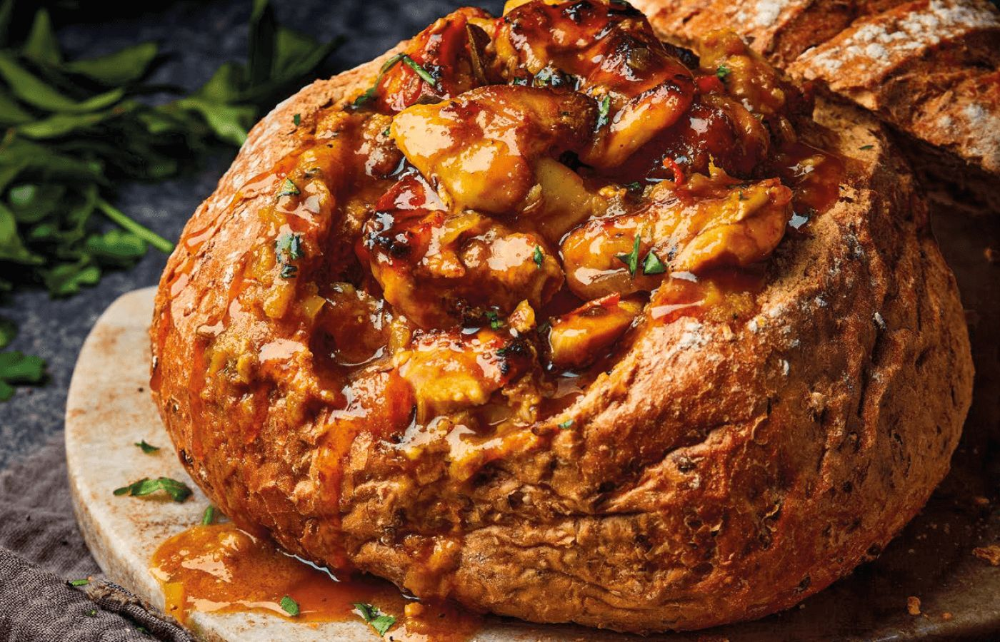

Southern Africa
South African Durban Bunny Chow
Cultural History & Significance
Bunny chow is Durban's most famous street food, born from the Indian immigrant community in South Africa. The name comes from "bunny" (slang for one-quarter) referring to a quarter loaf of bread. This hearty dish reflects the unique fusion of Indian and South African culinary traditions, with spicy curry served in a hollowed bread bowl.
Cooking Steps
Phase 1: Ingredient Prep & Marinade
- Cut beef into thin strips for faster cooking.
- Chop onions, mince garlic and ginger.
- Prepare curry spice mix: turmeric, cumin, coriander, cayenne, and garam masala.
Phase 2: Sauce Base & Browning
- Heat oil in a large pot. Brown the beef on high heat.
- Add onions, garlic, and ginger. Cook until softened.
- Add tomato puree and curry spices. Stir well and cook for 5 minutes.
Phase 3: Simmering & Slow Cooking
- Pour in beef stock and bring to a boil.
- Reduce heat and simmer for 30 minutes until the curry is thick and rich.
- Season with salt and lime juice to taste.
Phase 4: Plating & Traditional Accompaniments
- Take a white loaf and cut off the top. Hollow out the inside, creating a bread bowl.
- Spoon the hot curry into the hollowed bread.
- Serve with sliced onions and lime wedges on the side.
Ingredients
Servings
- 1 lb beef, sliced thin
- 1 white loaf bread
- 2 onions, chopped
- 4 cloves garlic
- 2 inches ginger
- 1 can tomato puree
- 2 cups beef stock
- Curry spices (turmeric, cumin, coriander, cayenne, garam masala)
- Lime juice
- Oil for cooking
Equipment
- Large pot
- Sharp knife
- Wooden spoon
- Bread knife
Nutritional Facts
| Nutrient | Amount |
|---|---|
| Calories | 550 kcal |
| Protein | 28 g |
| Carbohydrates | 52 g |
| Dietary Fiber | 3 g |
| Fat | 22 g |
| Sodium | 680 mg |
| Iron | 3.5 mg |
More From South Africa: Chicken Stew with iDombolo
Another comforting South African classic: slow-simmered chicken stew with steamed dumplings.